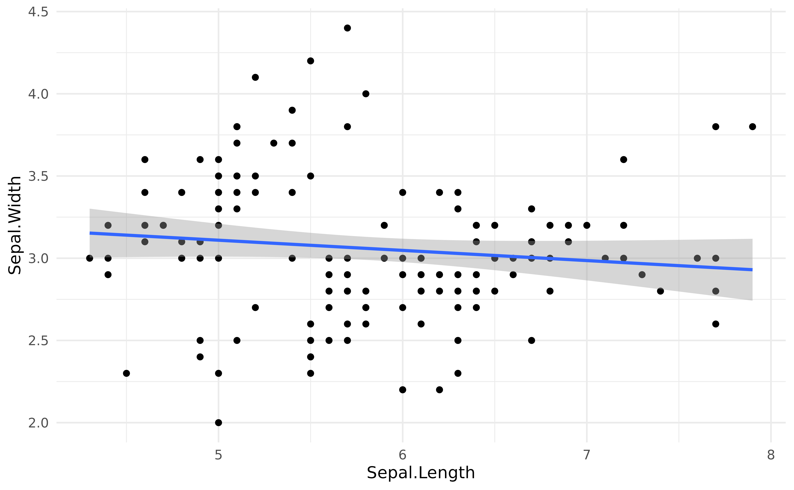

Sometimes, for instance for visualization purposes, we want to extract a reference grid (or data grid) of our dataset, that we will call a visualisation matrix. This reference grid usually contains the same variables than the original dataset, but reorganized in a particular, balanced, way. For instance, it might contain all the combinations of factors, or equally spread points of a continuous variable. These reference grids are often used as data for predictions of statistical models, to help us represent and understand them.
Simple linear regression
For instance, let’s fit a simple linear model that models the relationship between Sepal.Width and Sepal.Length.
library(parameters)
model <- lm(Sepal.Width ~ Sepal.Length, data = iris)
model_parameters(model)> Parameter | Coefficient | SE | 95% CI | t(148) | p
> -------------------------------------------------------------------
> (Intercept) | 3.42 | 0.25 | [ 2.92, 3.92] | 13.48 | < .001
> Sepal.Length | -0.06 | 0.04 | [-0.15, 0.02] | -1.44 | 0.152The most obvious way of representing this model is to plot the data points and add the regression line using the geom_smooth function from ggplot2:
library(ggplot2)
library(see)
ggplot(iris, aes(x = Sepal.Length, y = Sepal.Width)) +
geom_point() +
geom_smooth(method = "lm") +
theme_modern()
But how to “access” the data of this regression line? One option is to select some values of of the predictor (Sepal.Length), and predict the response (Sepal.Width) using the model. Using these x and y points, we can then create the regression line.
Let’s try the visualisation_matrix function from the estimate package.
library(modelbased)
visualisation_matrix(iris["Sepal.Length"])> Sepal.Length
> 1 4.3
> 2 4.7
> 3 5.1
> 4 5.5
> 5 5.9
> 6 6.3
> 7 6.7
> 8 7.1
> 9 7.5
> 10 7.9If we pass a numeric variable to the function, it will return a vector of equally spread points (having the same range, i.e., the same minimum and maximum, than the original data). The default length is 10, but we can adjust that through the length argument. Let’s generate predictions using this reference grid of the predictor.
newdata <- visualisation_matrix(iris["Sepal.Length"], length = 5)
newdata$Predicted_Sepal.Width <- predict(model, newdata)
newdata> Sepal.Length Predicted_Sepal.Width
> 1 4.3 3.2
> 2 5.2 3.1
> 3 6.1 3.0
> 4 7.0 3.0
> 5 7.9 2.9Now that we have our x and y values, we can plot the line as an overlay to the actual data points:
ggplot(iris, aes(x = Sepal.Length, y = Sepal.Width)) +
geom_point() +
geom_line(data = newdata, aes(y = Predicted_Sepal.Width), size = 1, color = "red") +
theme_modern()
As we can see, it is quite similar to the previous plot. So, when can this be useful?
Mixed models
Data grids are useful to represent more complex models. For instance, in the models above, the negative relationship between the length and width of the sepals is in fact biased by the presence of three different species. One way of adjusting the model for this grouping structure is to add it as a random effect in a mixed model. In the model below, the “fixed” effects (the parameters of interest) will be adjusted (“averaged over”) to the random effects.
library(lme4)
model <- lmer(Sepal.Width ~ Sepal.Length + (1 | Species), data = iris)
model_parameters(model)> Parameter | Coefficient | SE | 95% CI | t(146) | p
> ------------------------------------------------------------------
> (Intercept) | 1.04 | 0.43 | [0.21, 1.88] | 2.45 | 0.014
> Sepal.Length | 0.34 | 0.05 | [0.25, 0.43] | 7.47 | < .001As we can see, when adjusting for the species, the relationship between the two variables has become positive!
We can represent it using the same procedure as above (note the re.form = NA in the predict function to say that the random variable is not present in the new dataset).
newdata <- visualisation_matrix(iris["Sepal.Length"], length = 5)
newdata$Predicted_Sepal.Width <- predict(model, newdata, re.form = NA)
ggplot(iris, aes(x = Sepal.Length, y = Sepal.Width)) +
geom_point(aes(color = Species)) +
geom_line(data = newdata, aes(y = Predicted_Sepal.Width), size = 1) +
theme_modern()
Fixed variables
The above way of constructing the reference grid, i.e., by providing a single column of data to the function, is almost equivalent to the following:
newdata <- visualisation_matrix(iris, target = "Sepal.Length", length = 5)
newdata> Sepal.Length Sepal.Width Petal.Length Petal.Width Species
> 1 4.3 3.1 3.8 1.2 setosa
> 2 5.2 3.1 3.8 1.2 setosa
> 3 6.1 3.1 3.8 1.2 setosa
> 4 7.0 3.1 3.8 1.2 setosa
> 5 7.9 3.1 3.8 1.2 setosaHowever, the other variables (present in the dataframe but not selected as target) are “fixed”, i.e., they are maintained at specific values. This is useful when we have other variables in the model in whose effect we are not interested.
By default, factors are fixed by their “reference” level and numeric variables are fixed at their mean. However, this can be easily changed:
newdata <- visualisation_matrix(iris, target = "Sepal.Length", numerics = "min")
newdata> Sepal.Length Sepal.Width Petal.Length Petal.Width Species
> 1 4.3 2 1 0.1 setosa
> 2 4.7 2 1 0.1 setosa
> 3 5.1 2 1 0.1 setosa
> 4 5.5 2 1 0.1 setosa
> 5 5.9 2 1 0.1 setosa
> 6 6.3 2 1 0.1 setosa
> 7 6.7 2 1 0.1 setosa
> 8 7.1 2 1 0.1 setosa
> 9 7.5 2 1 0.1 setosa
> 10 7.9 2 1 0.1 setosaTarget variables
If more than one target variable is selected, visualisation_matrix will return the combination of them (i.e., all unique values crossed together). This can be useful in the case of an interaction between a numeric variable and a factor.
Let’s visualise the regression line for each of the levels of Species:
model <- lm(Sepal.Width ~ Sepal.Length * Species, data = iris)
newdata <- visualisation_matrix(iris, target = c("Sepal.Length", "Species"), length = 5)
newdata$Predicted_Sepal.Width <- predict(model, newdata)
newdata> Sepal.Length Species Sepal.Width Petal.Width Predicted_Sepal.Width
> 1 4.3 setosa 3.1 1.2 2.9
> 2 5.2 setosa 3.1 1.2 3.6
> 3 6.1 setosa 3.1 1.2 4.3
> 4 7.0 setosa 3.1 1.2 5.0
> 5 7.9 setosa 3.1 1.2 5.7
> 6 4.3 versicolor 3.1 1.2 2.2
> 7 5.2 versicolor 3.1 1.2 2.5
> 8 6.1 versicolor 3.1 1.2 2.8
> 9 7.0 versicolor 3.1 1.2 3.1
> 10 7.9 versicolor 3.1 1.2 3.4
> 11 4.3 virginica 3.1 1.2 2.4
> 12 5.2 virginica 3.1 1.2 2.7
> 13 6.1 virginica 3.1 1.2 2.9
> 14 7.0 virginica 3.1 1.2 3.1
> 15 7.9 virginica 3.1 1.2 3.3
ggplot(iris, aes(x = Sepal.Length, y = Sepal.Width, color = Species)) +
geom_point() +
geom_line(data = newdata, aes(y = Predicted_Sepal.Width), size = 1) +
theme_modern()
Preserve range
However, it is generally not a good practice to extend the regression lines beyond the range of its original data, as it is the case here for the red line. The preserve_range option allows to remove observations that are “outside” the original dataset (however, the length should be increased to improve the precision toward the edges):
newdata <- visualisation_matrix(iris,
target = c("Sepal.Length", "Species"),
length = 100,
preserve_range = TRUE
)
newdata$Predicted_Sepal.Width <- predict(model, newdata)
ggplot(iris, aes(x = Sepal.Length, y = Sepal.Width, color = Species)) +
geom_point() +
geom_line(data = newdata, aes(y = Predicted_Sepal.Width), size = 1) +
theme_modern()Visualising an interaction between two numeric variables (three-way interaction)
model <- lm(Sepal.Length ~ Petal.Length * Petal.Width, data = iris)
model_parameters(model)> Parameter | Coefficient | SE | 95% CI | t(146) | p
> ----------------------------------------------------------------------------------
> (Intercept) | 4.58 | 0.11 | [ 4.36, 4.80] | 40.89 | < .001
> Petal.Length | 0.44 | 0.07 | [ 0.31, 0.57] | 6.74 | < .001
> Petal.Width | -1.24 | 0.22 | [-1.67, -0.81] | -5.65 | < .001
> Petal.Length * Petal.Width | 0.19 | 0.03 | [ 0.12, 0.25] | 5.62 | < .001This idea can also be used to visualise interactions between two numeric variables, aka the nightmare of every scientist. One possibility is to basically represent the relationship between the response and one predictor at a few representative values of the second predictor.
In this case, we will represent the regression line between Sepal.Length and Petal.Length and a 5 equally spaced values of Petal.Length, to get a feel for the interaction.
We can obtain the right reference grid quite easily by chaining two visualisation_matrix together as follows:
library(dplyr)
newdata <- iris %>%
visualisation_matrix(c("Petal.Length", "Petal.Width"), length = 10) %>%
visualisation_matrix("Petal.Width", length = 5, numerics = "combination")What did we do here? We started by generating a reference grid containing all the combinations between the 10 equally spread values of the two target variables, creating 10 * 10 = 100 rows. The next step was to reduce Petal.Length to a set of 5 values, but without touching the other variables (i.e., keeping the 10 values created for Petal.Length). This was achieved using numerics = "combination".
We can then visualise it as follows:
newdata$Predicted_Sepal.Length <- predict(model, newdata)
iris %>%
ggplot(aes(x = Petal.Length, y = Sepal.Length, color = Petal.Width)) +
geom_point() +
geom_line(data = newdata, aes(y = Predicted_Sepal.Length, group = Petal.Width), size = 1) +
scale_color_viridis_c() +
theme_modern()
Such plot can be more clear by expressing the interaction variable in terms of deviations from the mean (as a standardized variable).
newdata <- iris %>%
visualisation_matrix(c("Petal.Length", "Petal.Width"), length = 10) %>%
visualisation_matrix("Petal.Width",
length = 3,
numerics = "combination",
standardize = TRUE,
reference = iris
)
newdata$Predicted_Sepal.Length <- predict(model, newdata)
# Express values in an abstract way
newdata$Petal.Width <- effectsize::format_standardize(newdata$Petal.Width, reference = iris$Petal.Width)
iris %>%
ggplot(aes(x = Petal.Length, y = Sepal.Length)) +
geom_point2(aes(fill = Petal.Width), color = "white", shape = 21, size = 5) + # Only shapes from 21 to 25 have a fill aesthetic
geom_line(data = newdata, aes(y = Predicted_Sepal.Length, color = Petal.Width), size = 1) +
scale_color_viridis_d(direction = -1) +
scale_fill_viridis_c(guide = FALSE) +
theme_modern()
As the Petal.Width increases (becomes yellow), the coefficient between Petal.Length and Sepal.Length increases (the slope is more steep). Although, as we can guess, this in fact captures the underlying effect of species… but we’ll leave discussing the meaningfulness of your models to you :)
Tips and Tricks
visualization_matrix() also runs directly on model objects
To illustrate this, let’s set up a general additive mixed model (GAMM), where we are going to specify a smooth term (a non-linear relationship; specified by s() function) and some random effects structure.
library(gamm4)
model <- gamm4::gamm4(
formula = Petal.Length ~ Petal.Width + s(Sepal.Length),
random = ~ (1 | Species),
data = iris
)One can directly extract the visualization matrix for this model by entering the entire object into the function:
visualisation_matrix(model, length = 3, include_random = FALSE)> Petal.Width Sepal.Length
> 1 0.1 4.3
> 2 1.3 4.3
> 3 2.5 4.3
> 4 0.1 6.1
> 5 1.3 6.1
> 6 2.5 6.1
> 7 0.1 7.9
> 8 1.3 7.9
> 9 2.5 7.9We also skip the smooth term if we are interested only in the fixed effects:
visualisation_matrix(model, length = 3, include_random = FALSE, include_smooth = FALSE)> Petal.Width
> 1 0.1
> 2 1.3
> 3 2.5We can also include random effects:
visualisation_matrix(model, length = 3, include_random = TRUE)> Petal.Width Sepal.Length Species
> 1 0.1 4.3 setosa
> 2 1.3 4.3 setosa
> 3 2.5 4.3 setosa
> 4 0.1 6.1 setosa
> 5 1.3 6.1 setosa
> 6 2.5 6.1 setosa
> 7 0.1 7.9 setosa
> 8 1.3 7.9 setosa
> 9 2.5 7.9 setosa
> 10 0.1 4.3 versicolor
> 11 1.3 4.3 versicolor
> 12 2.5 4.3 versicolor
> 13 0.1 6.1 versicolor
> 14 1.3 6.1 versicolor
> 15 2.5 6.1 versicolor
> 16 0.1 7.9 versicolor
> 17 1.3 7.9 versicolor
> 18 2.5 7.9 versicolor
> 19 0.1 4.3 virginica
> 20 1.3 4.3 virginica
> 21 2.5 4.3 virginica
> 22 0.1 6.1 virginica
> 23 1.3 6.1 virginica
> 24 2.5 6.1 virginica
> 25 0.1 7.9 virginica
> 26 1.3 7.9 virginica
> 27 2.5 7.9 virginica